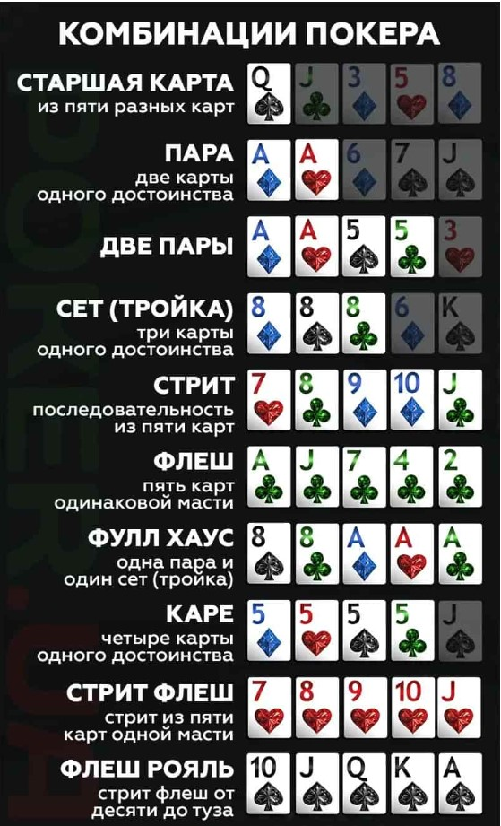
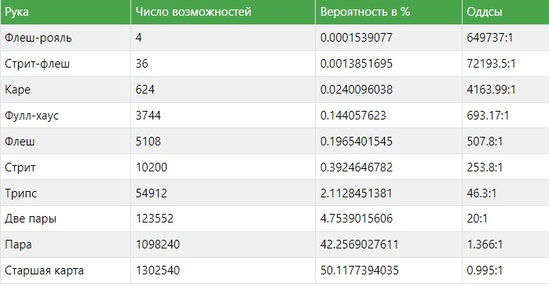
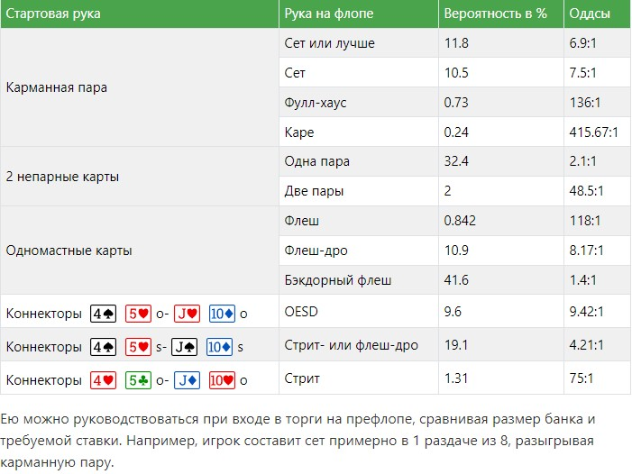
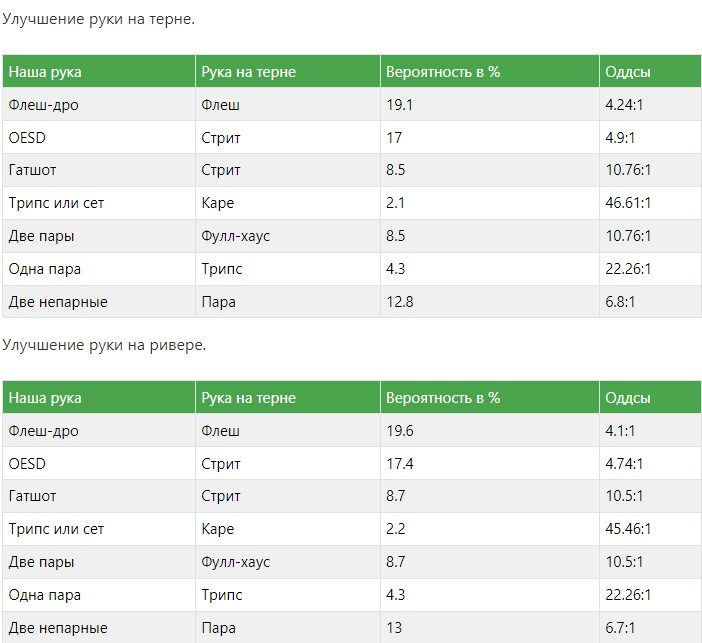

Холдем — интеллектуальная игра, так как покерист может использовать стратегию, повышающую вероятность победы. Математические расчеты позволяют выяснить шансы получения нужной карты, выпадения победной комбинации. Дополнительные аспекты успеха — психология, управление покерным капиталом, учитывание статистики соперников при принятии решений. Перед тем, как начать играть в классический покер онлайн на деньги, нужно изучить стратегию.
Для участия в игре нужно купить стек фишек в количестве, соответствующем требованиям стола.
Этапы раздачи:
С двух участников снимаются обязательные ставки — большой и малый блайнды, формирующие стартовый банк.
Все игроки получают стартеры — две карты, которые не видят оппоненты.
Начинается префлоп. Первым в торгах ходит пользователь, сидящий слева от соперника, с которого снят большой блайнд. Далее право действовать передается по ходу часовой стрелки. При получении его противники объявляют одно из стандартных решений, предусмотренных правилами — фолд, чек, колл, рейз. Торги завершаются, когда оппоненты сравнивают ставки.
Начинается флоп. На столе открываются три общие карты (борд). Оценивая силу комбинаций, противники начинают вторые торги — правила аналогичны первым.
На терне действия проходят по сценарию игры на флопе, но на стол выкладывается только одна карта.
Ривер — заключительный этап. На борд добавляется пятая карта и проводятся последние торги. По их завершении производится вскрытие стартеров и сравнение комбинаций. Банк достается участнику, имеющему расклад сильнее, чем у оппонентов. Раздача завершается и начинается новая.
Победить в игре можно, и не дойдя до ривера. Случается так, что в раздаче остается один покерист — остальные сбросили карты, отказавшись уравнять ставку. В торгах допускается использовать только те фишки, которые были у участника перед снятием обязательных ставок.
Комбинации нужны для определения победителя при вскрытии на ривере. Правила регламентируют их составление, старшинство, сравнение. В Холдеме действуют классические комбинации, также используемые в ряде других дисциплин. Для составления из семи карт (борд и стартеры) выбираются пять, позволяющих получить сильнейшую комбинацию из возможных в текущей ситуации.
Ценность каждой комбинации определяется тем, насколько сложно ее собрать, то есть напрямую зависит от вероятности.
Большее практическое значение несет таблица с показателями шансов получения готовой руки на флопе, при входе в торги с различными карманками. Вот сравнение вероятностей сбора комбинаций в покере Техасский Холдем.
Любой игрок часто сталкивается с такой ситуацией, что рука оказывается недостроенной на флопе или терне, но есть шансы составить ее на следующей улице. Соперники редко предоставляют возможность посмотреть следующие карты бесплатно. Зная шансы на получение нужного аута для построения комбинации, можно определить целесообразность колла ставки оппонента. Таблицы предоставляют необходимые показатели для разных кругов торгов.
 Ранняя позиция
Ранняя позиция является наименее привлекательной для игры, потому что на постфлопе вы будете принимать решение одним из первых.
Средняя позиция
Средние позиции будут получше, чем ранние, но все равно не так хороши как поздние. Здесь вы можете позволить себе играть немного больше рук, чем с UTG, так как за вами останется меньше людей, которые смогут заколлировать и на постфлопе будут иметь позицию на вас.
Поздняя позиция
Поздние позиции наиболее выгодны, так как велика вероятность того, что вы будете принимать решение последним (либо одним из последних) на всех последующих улицах. Это крайне полезно, так как у вас в таком случае будет больше пространства для маневров. Но также помните, не надо разыгрывать абсолютный мусор каждый раз, только из-за того что у вас будет позиция.
Поздняя позиция Баттон (BU)
Баттон – это лучшее из возможных мест за столом, так как на каждой улице (кроме префлопа), вы будете последним, принимающим решение. И это потрясающе! Именно поэтому вам нужно стараться разыгрывать с баттона настолько много рук, насколько это возможно. И поэтому, находясь на баттоне, я обычно ищу причину, чтобы не играть.
Позиция за столом – это простой и в то же время один из самых недооцениваемых факторов в игре множества игроков-любителей. Позиция настолько важна, что зачастую рука может быть выиграна или проиграна только лишь из-за наличия или отсутствия позиции, вне зависимости от карт на руках.